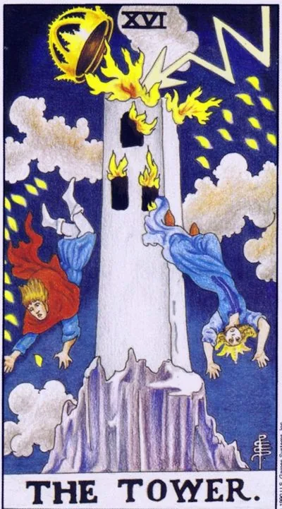

Major Arcana · XVI
XVIThe Tower
Lightning strikes at the foundation: the false collapses suddenly - and precisely because it was false.
Archetype and core meaning
The tower built on the sand has endured years, to one loud blow. The lightning on the card is not an accident, but an audit: anything that is held on self-deception does not withstand contact with the truth. The crown flies from the top, vanity always falls first.
The tower arrangement promises not trouble at all, but the dismantling of concrete constructs: relationships based on illusions, careers based on talents, reputation-facade, destruction is swift and painful, but it releases what has been walled up alive.
And after the fall, the amazing thing is that the land is closer than it seemed from the top floor window. The Arcana of Mars is not about punishment, but about forced honesty, the fastest form of growth.
Daily life
A day of surprises: technology breaks down, plans break down, news comes in without warning. Don't cling to the script - the restructuring goes faster without resistance. It's good to acknowledge aloud what was clear long ago: an acknowledged problem explodes quietly. By evening there is usually a strange relief.
Work and career
Professional thunder: layoffs, project failures, team breakdowns, public failure of a beautiful strategy. If your design was fair, the blow will only hurt extra. Don't rebuild the collapsed one -- build lower, wider and with your materials.
Relationships
The relationship was in crisis-exposure: the secret came out, the unsubscribed came out, "we're fine" ended. It's not necessarily a break-up — sometimes it's the only way a couple sees each other for real for the first time. The union on an honest foundation will survive the storm and grow stronger; the facade relationship will collapse, freeing both. It hurts and cleanses.
Health
The acute states: exacerbation, trauma, fever, sudden diagnosis — the body screams where you haven't listened to a whisper in years. The card requires immediate response and complete honesty with the doctors. Often, an acute crisis turns out to be a turning point: correctly treated, it removes the entire chronic background.
Spiritual meaning
The tower is a card of illumination by force: an awakening that was not asked for, a destruction of ego constructs by lightning from above, used in magic to break enchanted circles and remove old negativity — the image works loudly and requires respect. The main lesson of the arcana is not to be attached to forms even the most beautiful.
The storm hangs in the air or has already passed the side: the tension requires an exit - planned or spontaneous.
Archetype and core meaning
The inverted tower is a thunderstorm that somehow doesn't start. Everybody feels the pressure, everybody's waiting for the explosion, and it's delayed, and it's getting more expensive every day. It's a card of slow dismantling, the walls cracking for months, and nobody dares to start a serious analysis.
The other sense is the catastrophe inside: everything is held on the outside, and the inside is already collapsing - sleep, nerves, faith in what is happening, a person supports his face at the cost of health and sincerity.
There is also a favorable option: lightning struck nearby, the debris passed by, then the card says briefly - the terrible is over, it's time to get out of under the table and calmly dismantle the blockage.
Daily life
Getting excited: little things get upset, the equipment breaks down in turn, the house slides into conflict. Make it a regular exercise, talk, tears, or it will happen on its own and not where it is convenient. Check the fuses literally and figuratively: where the tension accumulates, it eventually breaks.
Work and career
The crisis is smoldering: the organization is cracking, but officially "everything is under control"; cuts are whispered, strategy is falling apart; don't wait for official letters - update your resume, warm up your connections, put valuables in your portfolio; if you're cooking the blast yourself, lay the foundation in advance: cutting is hotly expensive.
Relationships
The relationship hangs over the breakup: both know it's over or it's about to change, but it's the same play, and it's broken through by domestic breakdowns and grievances, silence about the big stuff eats away at intimacy from within, and the only safe way to tell the truth is to tell it yourself before life tells it for you.
Health
The harbingers are there: pressure, panic waves, insomnia, the body prepares its thunder if you keep pulling. Chronic stress has already picked a weak spot and works on it. Planned discharge — vacation, therapy, examination — is always cheaper than emergency. After the experience of shock, apathy is possible: it is repair, give it a deadline.
Spiritual meaning
In practice, the inverted tower warns of accumulated negativity in space or body: cleansing is necessary, but gradual, otherwise it will whip at once. The letting techniques work better than the power ones. Sometimes the card reports a preventative blow: the defense worked, thank you and reconsider your lifestyle. The lesson is to relieve tension in small portions without bringing to lightning.
🌿 In brief
The main idea
The tower is a sharp transition from one state to another. Unlike Moderation, where change is gradual, the factor of surprise appears.
How it manifests
The collapse of the old, sudden restructuring, force majeure, unexpected events, the destruction of the usual scenario.
Work.
Career restructuring, change of profession, the need to change the working model.
In a relationship
Even a stable union requires repair and renewal, and if you don't change anything for years, a relationship can collapse suddenly.
Finance.
Risks, the need to have a reserve, change the form of investments and think in advance about force majeure.
The shadow side
The tower is especially unpleasant for those who did not want to change anything.
Feature of the school
The tower is connected to Capricorn, X House, Saturn and Uranus, and an important principle of the card is that the crown always falls from the tower. If power is not transferred in time, it will be thrown off itself.
📜 In detail — lecture extracts
Essence of the card
The tower is feared by customers ("everything is lost, everything is bad"), which is "a perfectly normal natural process in anyone's life," unpleasant but necessary. The core of the card is the transition from one state to another: if Moderation gives a qualitative transition, then the Tower is a sharp transition with the factor of suddenness. And "something must be done": "man assumes, God disposes."
Upright position
Interpreting through his astrological system: the tenth house, Capricorn, Saturn/Kronos + Uranus (Yuri Khan system). cards are placed on the house in a "gradient": Capricorn partially "climbs" into the Devil and the Star. Tower - external protection (building itself in the big world); Chariot (opposite 4th house) - the inner, "small safety harbor" of the family.
Work/career: you have a careerist building a career and an image; straight-forward, carefully preparing for the challenges. School example: a tarologist has to remodel his tower online — those who haven't had time, "fall off it." Relationships/family: family hearth – the chariot given by parents; the tower – the cell of society (marriage) that needs to be “renovated, updated and rebuilt”, otherwise it will collapse suddenly (“some mistress or lover”). A man’s interest falls if you live “on the same flight of stairs” for years – plan to please your partner “in a year, two, five”. Self-development/plans: the higher the tower (dominoes require "knitting"), the more precise the action: Direct - there is a plan B and supplies, lightning "does not drop the hat"; force majeure to prescribe in contracts, breaking patterns and rebuilding the personality in time - otherwise time will hit the crown (Nokia in the age of iPhones). Finance: savings are held in case of siege; risks are the same lightning. Change the form of investments in time - bank → real estate, dollar → bitcoin ("the same bricks are shifted differently"). Fear as an instrument of power (the ring of Saturn) does not last long - the rate chart falls. I also saw that retirement (change of generations; a reference to the Ten Pentacles) may not bring what you expected.
Negative meaning
The formulas are scattered throughout the lecture: sudden accidents to leave plans; careerists can "go on their heads," "you can expect any nasty things"; risks in investments are not taken into account; hopes are ruined - built "the nonsense that falls from any storm"; raising a child in the old way - "the tower will throw off." The general principle of the school is neutral - "there is nothing eternal under the moon," who rebuilds and transfers power in time, "that tower will not be thrown down."
School emphases and distinctive points
- Waite's quotes: "crash in all its aspects"; "the word made flesh" - man builds a tower in the same way that God makes the world in miniature, not the fall of Adam; "the ruin of the mind that dared to penetrate the mystery of God"; "if the Lord does not build houses, the labors of builders are in vain" - a shade of just retribution. A bunch of neighboring cards: the devil - a fall into an animal state, the tower - the collapse of an intellect that is proud.
- About Mars from other authors: “on the fence, too, write.”
- Tower of Babel: the motive "to make a name for yourself" = the tenth house; God mixed languages - the factor of surprise; lightning = chance: "When God wants to speak incognito, he signs the name of chance"; "the lightning rod should be put up."
- Zigkurats (Etemenanki, “the house where heaven and earth meet”): destruction and reconstruction are inseparable from the image; the stones of the ziggurat dismantled by Macedonian went to the theater – “nothing was wasted.”
- - Medieval siege tower (in the lecture caught historical reconstruction): high point - "from above you predict events"; stocks for siege; ring of siege = ring of Saturn; landlord and hereditary power; spiral steps - "each floor - the next generation." "The crown always falls from the tower": power is either transferred to the heir on time or thrown off suddenly (the example of Yeltsin).
- Uranus and Kronos: Uranus is the progenitor of the gods, the "population of ideas", new ideas come "according to Uranus"; Kronos has shifted his father, the sickle is bent down - "the fall of power." Eating children is an agrarian logic: you raise, then cut weak animals.
- Saturnalia 17-20 December: gentlemen and servants change places, return to the "golden age" of hunter-gatherers; hence the New Year and the Slavic series: caroling, goat skins and horns, gifts to good children and punishment of bad = natural selection.
- Pan is an analogue of Capricorn: he brought panic terror to the Titans for the sake of Zeus; panic fear comes “from the moon”, conscious fear of norms – “from Saturn”; from Typhon fell into the Nile – a fish tail.
- - David and Goliath: Goliath - a descendant of the Rephaim (giants or dead ancestors); David removed armor - only the truth defeats the accumulated structure; Goliath opened from emotions and received a pebble in the forehead; hyperemotional Cancer against the granite of Capricorn - his image is easy to destroy his own emotions.
- Twin Towers (9/11) – a sign of the transition of the Pisces era to Aquarius (“Coincidence? I don’t think... I’m not a conspiracy theorist”).
- Cardinal earth: granite, monuments, “thought carved in granite”, diamonds as extremely concentrated matter (tambourines = diamonds).
- - Images in the cinema: "I'm enough" / "Falling down" (Michael Douglas) - endured and broke, "cut off the roof" of the mind; "Zombieland" (Woody Harrelson with a pickaxe) - post-apocalypse as the collapse of the familiar world, bricks of life experience will be useful in the new reality (tears a box of money); "People in black" - the picture of the world collapsed overnight, learn from each other; "Downton Abbey" - owners and servants with changing films; "Tapodashityatrophyskatsya" - people are created by the world" (" by the radio), "Tatrophyskatyatrophyskats) - "people are created by the "ttas" ("
- - The little thing about the decor: in Lovers, the man on the right, the woman on the left, in the Tower, they change places, "only in the Jester everything falls into place." The Amber Chronicles of Zelazna led him to the Tarot.
Keywords
- factor of surprise · lightning-accident · safety outwards · generational change, power transfer · “the crown always falls from the tower” · career and respect (image) · stocks and plan B · tower rebuilding · Saturn ring · break patterns, exit from the comfort zone
- ---